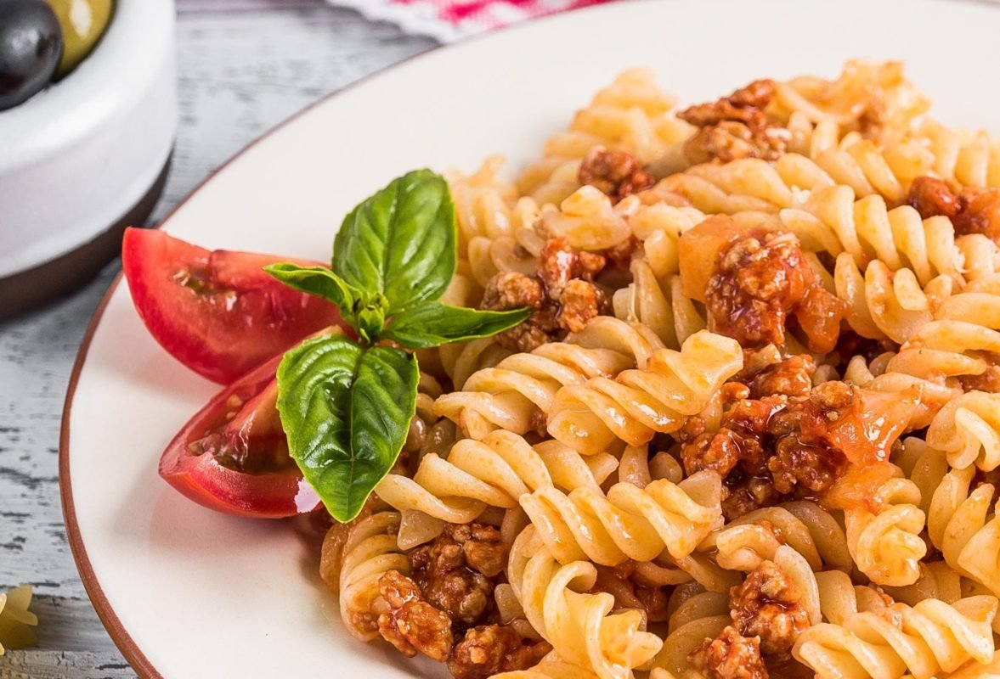

Рецепт Макарошек по флотски

Макароны по-флотски — одно из самых народных блюд, хотя история их триумфального шествия по советским, а затем российским кухням началась всего лишь около 70 лет назад. Впервые они упоминаются в советской книге «Кулинария» 1955 года.
Поверите ли вы в то, что до революции стоимость макарон в царской России была примерно такой же, как у мяса? Первые фабрики по производству этих изделий появились в 1797 году в Одессе, продукция стоила крайне дорого, позволить себе макароны могли только обеспеченные люди. После революции всевозможные спагетти и рожки прописались в той странной категории продуктов, которыми планировали кормить новую страну, но которые сейчас совсем не ассоциируются с СССР (например, крабы и устрицы). Во время и после войны фокус сместился в сторону производства того, что может долго храниться, и вот тут на первый план и вышли макароны. А дальше дело техники: соединить их со столь же вечной тушенкой или консервами — и вперед, практически мгновенно готов сытный обед.
Впрочем, эта идея была известна и раньше. В «Книге о вкусной и здоровой пище» 1939 года этот рецепт упоминается под названием «Макароны с мясом». А еще история знает забавный эпизод, который так и просится в кино. В 1915 году на линкоре «Гангут» произошел бунт из-за того, что матросам после тяжелой физической работы дали не макароны, а ячневую кашу. Кстати, это стало одним из первых упоминаний макарон в связи с флотом, и, скорее всего, название нашего блюда произошло именно вследствие того, что брать в долгое плавание два долго хранящихся продукта (макароны и тушенку) было просто удобно.
Но сейчас макароны по-флотски — это совсем необязательно тушенка. Классический рецепт подразумевает использование обжаренного с луком мясного фарша.
Ингридиенты
- Лук 1-2 штук;
- Морковь 1 штука;
- Чеснок 2 зубчика;
- Фарш 500 грамм
- Томатная паста 2 ст. ложки;
- Соль по вкусу;
- Растительное масло 2-3 Ст. ложек;
- Специи по вкусу
Приготовление
- Макароны отварите в подсоленной воде до готовности и откиньте на дуршлаг.
- Лук нарежьте кубиками и обжарьте до мягкости.
- Добавьте тертую морковь и обжарьте, периодически помешивая, в течение 5 минут.
- Добавьте в сковороду фарш, соль и любимые специи.
- Обжаривайте фарш, разбивая комочки лопаткой до тех пор, пока он не побелеет.
- Добавьте томатную пасту и мелко нарезанный чеснок.
- Хорошо перемешайте и продолжайте готовить все вместе еще около 5 минут.
- Добавьте макароны и прогрейте, периодически помешивая, все вместе еще около 2-3 минут.
- Макароны по-флотски с томатной пастой готовы.
Домой